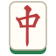

端末を横向きにしてください
欲しい牌を選び、「選択中」で目標枚数を決めます。目標に足りない牌を残し、欲しくない牌 → 目標を超えた牌の順に切って（ツモ牌が切ってよい牌ならツモ切り）、停止条件を満たしたら止まります。達成できない条件では開始しません。何も選ばなければ常にツモ切りします。
卓の「自動和了」「自動カン」が ON のときはそちらが優先されます。目標に達したときは和了・カンできる状態で止まります。
高速（1秒に2回以上）ではアニメーションを省略し、表示も間引きます。